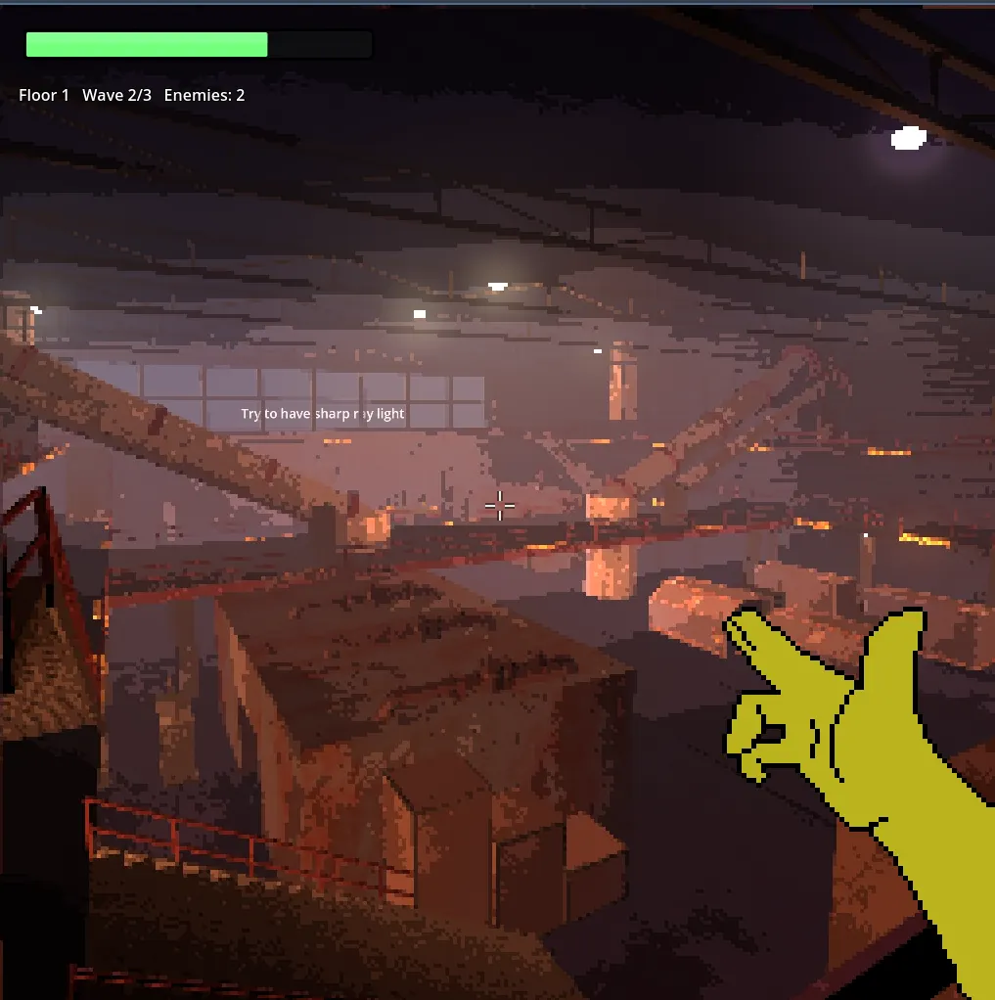
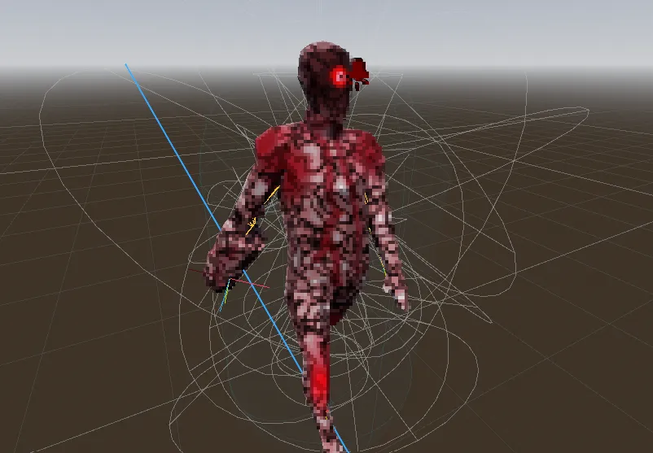
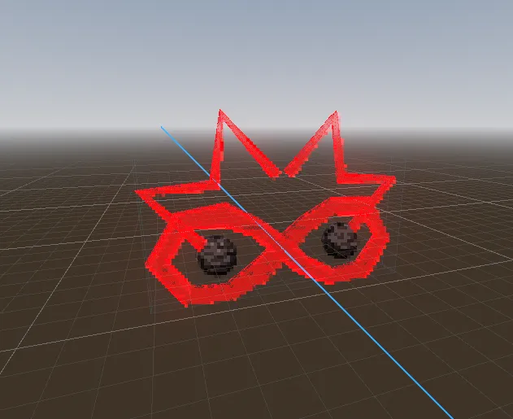

Game development
The Elevator
A fast first-person dungeon crawler set in a brutalist tower you dream every night, and can only wake from by reaching the bottom.

§One Month in Progress Log (6/25/26):
- Theme
- Gameplay
- Player
- Enemy Spawning Mechanics
- Enemy #1 - Brainialis
- Enemy #2 - InfinityWatcher
- Rooms
- Soundtrack/SFX
§Theme:
The main theme/idea is still in development but the main idea is planted. As the player, you face a struggle every night. Whenever you go to sleep, you enter the same exact dream. What is the dream? The dream is where the game takes place; an extremely tall brutalist tower. The tower is a construct of the player's mind when he is asleep, and the player is trapped inside it.
The tower presents itself as architecture (floors, rooms, an elevator) but it is a dream's filing system. Each floor is a stratum of the dreamer. Each room is an individual memory, fear, or construct the dream pulls at random from that stratum's pool.
The elevator is the only stable structure in the entire tower. It is the spine, the thread of continuity the dreamer clings to. Everything between elevator stops is improvised by the dream. The rooms are different, the contents are different every night the player sleeps. The tower never says the same, though draws from the same pool.
You as the player have found that you cannot escape this dream unless you get to the very bottom. That is the only way you as the player can wake up . . . you must exit the dream every night. Whilst stuck in the dream, time is slowed, it is perpetual and a never ending nightmare
§Layer 1 — The Surface of Sleep
- Architecture: Grungy concrete and steel — boiler rooms, stairwells, parking garages, fluorescent hallways. The generic dream-spaces everyone dreams; the placeholder architecture the mind reaches for when it needs to fill a space. Liminal, institutional, empty. No one lives here.
- Tone: Recognizable and almost safe, which is exactly why it opens the game. Familiar, eerie, empty.
- Enemies: Faceless and procedural — the dream's stagehands, things that exist only to fill the space. Orderly, uniform. They establish the baseline rules.
§Layer 2 — Deep Sleep
The dream has a real hold of you.
- Architecture: The dream stops using placeholders and starts using material — warped memories and personal rooms. Bedrooms, kitchens, a childhood hallway, but distorted: a door too small, a window onto the wrong sky, furniture from three different homes in one room. Randomness here reads as the dream confusing one memory for another.
- Tone: Harder, stranger, more specific. The space is now someone's, not no one's.
- Enemies: Distorted figures — half-remembered people, faces that won't resolve.
§Layer 3 — The Thing Underneath Sleep
Past the part of the mind that maintains the fiction.
- Architecture: Biomechanical corruption and reality-breaking void — non-euclidean space, impossible geometry, rooms that are only a feeling. These are the rooms the dreamer doesn't want reached: the repressed and the raw. Geometry breaks because you've gone past the part of the mind that maintains the fiction of "rooms."
- Tone: The rules learned above no longer apply. The deepest reach before the bottom.
- Enemies: Incoherent, shifting, symbolic — the stuff that can't be named.
Progression logic: Each phase isn't just uglier — it's the mind's fiction breaking down further. Placeholder → personal material → raw repressed core. That arc gives each phase a distinct combat identity and a reason to exist beyond a new texture set.
§Room Types
Both room types are diegetic obstacles, not mechanical mode-switches.
- Regular rooms — the dream's default construction. The placeholder it reaches for when it needs to build something quickly. The connective tissue of the tower.
- Puzzle rooms — the dream resisting. A locked memory, a knot the mind doesn't want undone, a door that won't open until the thing it's protecting is solved. Puzzles are obstacles the dream throws up specifically to slow the descent. Solving one is forcing the mind open.
§The Bottom — TBD
What's at the bottom colors every room's subtext and determines whether the descent is escape, confrontation, or a mistake. This is not yet committed. Candidate identities for the core:
- The sleeper themselves — descent is escape/confrontation with the self. The ending where you find yourself sleeping at the final floor and have to shoot yourself fits here: the only way to wake is to end the dreamer, and the dreamer is you. Confessional, personal, brutal.
- The trauma that started the dream — descent is confrontation with the wound. The bottom is the event the whole tower was built to bury.
- Something the dream is a prison for — descent is a mistake. You are not waking a person; you are letting something out. Reaching the bottom doesn't free you, it frees it.
§Gameplay Loop:
The main gameplay loop is a fusion between a dungeon crawler and fast paced shooter. The game pics from a huge library of rooms. The player enters the elevator and goes down. The elevator then stops and the room is revealed. Upon entering, the elevator door shuts and the trial of the room begins. Enemy's will spawn in a pseudo-random fashion (see enemy spawning mechanics) and the player is tasked with killing the various enemies that spawn. These are all constructs of the player's mind to keep him from waking up. There will be a select number of waves per room that the player must clear. Some rooms will be boss rooms or puzzle rooms as well. Upon clearing the room, the elevator re-opens and the player can continue his descent. Room's will also be littered with means of getting items/upgrades (which I haven't settled on yet) and these can involve things such as stat power-ups, on-hit chance items, on-kill items, and overall different mechanically rich items that allow nuanced builds and interesting combo oriented gameplay. The pace of the game is fast paced, similar to ultra kill.
§Player:
The player is a first person FPS player controller. The player's hands his guns (ex. he uses a finger gun to shoot and even the reload animation is done with the hand). All the hand animations are rotoscope animations in pixel art. The player controller is very momentum driven with slides, dashes and wall jumps that all interact smoothly with each other. Maneuvering around enemies is satisfying and encouraged.
§Enemy Spawning Mechanic
A Risk-of-Rain-style credit-budget wave spawner, fully data-driven. Each floor gets a pool of "credits" that grows with depth; the pool is split across a random number of waves; each wave spends its slice buying enemies. The whole system is driven by an autoload director (CombatDirector) and per-enemy resource files (EnemyCard .tres), so adding an enemy is just dropping a file in a folder — no code.
Lifecycle. The floor manager loads a floor and "arms" it (elevator stays locked). When the player steps out of the elevator, the elevator calls start_floor(). The director computes the floor's credits, rolls a wave count (3–6), and splits the budget across those waves. It then runs waves one at a time — each wave spends its budget on enemies and the next wave won't start until every enemy of the current wave is dead, with a short pause between. When the last wave clears, the floor is marked cleared and the elevator unlocks for the ride down. Signals fire at each step (floor_combat_started, wave_started, wave_cleared, floor_cleared, enemy_count_changed) for the HUD, elevator, and future systems to hook into.
Floor budget (geometric growth). floor_credits(f) = round(80 * 1.18^(f-1)). Floor 1 is ~80 credits; by floor 10 it's ~355. So the raw volume the dream can afford climbs steadily with depth.
| Floor | 1 | 2 | 3 | 4 | 5 | 6 | 7 | 8 | 9 | 10 |
|---|---|---|---|---|---|---|---|---|---|---|
| Budget | 80 | 94 | 111 | 131 | 155 | 183 | 216 | 255 | 301 | 355 |
Splitting across waves. Each wave gets a weight ramping linearly from 1.0 (first) up to 1.35 (last), and the budget is divided in proportion — so later waves are bigger, and each room escalates as it goes. Rounding remainder is dumped into the last wave. (Worked example — Floor 5, 155 credits, 4 waves → budgets [33, 37, 41, 44].) Note: leftover credits inside a wave that can't afford anything more are wasted, not carried forward, so until cheap swarmers exist the actual counts run a bit below budget ÷ cost.
Spending a wave (quantity → quality curve). A wave keeps buying enemies until nothing's affordable or it hits the per-wave cap (30). Cards are picked by weighted random among those that are affordable (cost <= remaining) and unlocked (min_floor <= current_floor):
selection_weight = card.weight * pow(card.cost, cost_bias)
cost_bias = clamp((floor - 1) * 0.05, 0, 1.5)
On floor 1 cost_bias = 0, so cost is neutral and cheap enemies dominate by sheer count — quantity. On deep floors cost_bias rises and expensive cards get weighted far more heavily — quality. Combined with the bigger total budget, deep floors become "fewer but bigger." min_floor hard-gates an enemy behind depth (a bruiser with min_floor = 6 can't appear before floor 6). A wave that somehow buys nothing falls back to spawning the single cheapest unlocked enemy, so waves are never empty.
Where enemies appear. Preferred spawn points are Marker3D nodes in the enemy_spawn group placed per room; the director favors markers that are both off-screen and ≥6 m from the player, picking randomly among that "good" set so a wave spreads out. With no usable markers, it picks a random direction around the player and raycasts down onto real floor at 6–14 m (8 attempts, else spawns on the player as a last resort). Spawned enemies are parented under a SpawnedEnemies node so they clean up with the floor, and facing is applied in world space so it's correct even in rotated rooms.
Wave-clear detection. Each spawned enemy is tracked and the director listens to its Health.died signal (plus tree_exited as a safety net). An enemy counts as dead the instant its health hits 0, not when the ragdoll despawns. When the live set empties and the wave has finished spawning, the director advances to the next wave.
Tuning knobs (@export on the director): base_credits (80), credit_growth (1.18), min_waves/max_waves (3/6), wave_escalation (0.35), cost_bias_per_floor (0.05), max_cost_bias (1.5), per_wave_spawn_cap (30), time_between_waves (2.0 s), spawn_stagger (0.08 s), spawn_min_player_distance (6 m).
Adding a new enemy (no code): build the enemy scene (a CharacterBody3D with a child Health node), create a new EnemyCard resource in Data/Enemies/, set its fields (scene, cost, min_floor, weight, category), and save. The director auto-loads every card in that folder at startup.
Full engineering reference — exact per-wave share tables, signal/API list, file paths, and fallback details — lives in
Enemy_Spawning.md.
§Brainialis - Enemy #1
This enemy is one of the basic enemies. It is a humanoid entity with not so human traits. Its entire flesh and body is made of brain matter with dripping blood. It's right arm is a fleshy meat canon which is significantly bigger than its other arm. It also has one glaring eye on its head that stares into your soul. Mechanically, the Brainialis keeps a certain distance from the player, tracking with its right arm canon. The canon follows the player and the Brainialis shoots blood projectiles at the player dealing damage. Upon death, the Brainialis ragdolls and you can break its limbs.

§InfinityWatcher - Enemy #2:
the InfinityWatcher is a floating, read holographic infinity symbol with two sigma signs acting as eyebrows. The special thing about it is that it has two eyes in the holes of the infinity symbol, closed shut by rusty metal eye-lids. The InfinityWatcher idles and hovers around. When it hovers around, the infinity symbol spins around its central axis. At first glance, the InfiniyWatcher seems passive however when you come close it opens its eyes and reveales its glaring emerald green pupils. It locks its eyes onto you and stares at you, crippling you and draining your health in the process. You must destroy both its eyes once they are open to kill it. There is no other way to kill the InfinityWatcher.

§Rooms:
Only one room is made right now and it is a huge industrial room with massive pipe systems and power grids. It contains a giant window letting the glowing moon and purple sky peer in. The shader does a good job giving the visuals soul.
§Soundtrack/SFX:
I've made boss music as well as one dynamic fight track for the game. The soundtrack centers around a powerful guitar. All the sound effects are made with my own mouth as an artistic decision